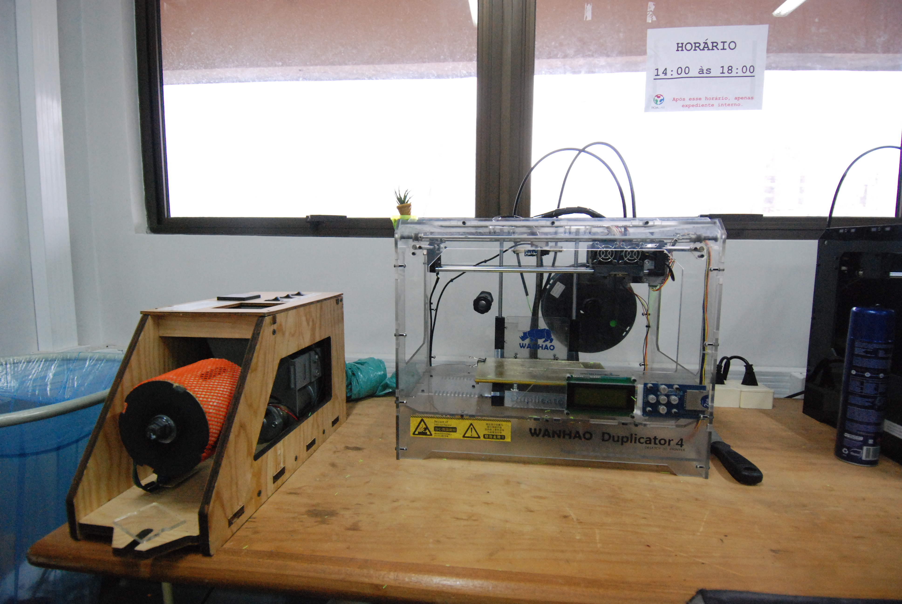
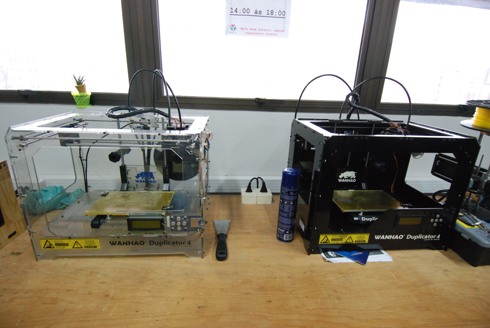
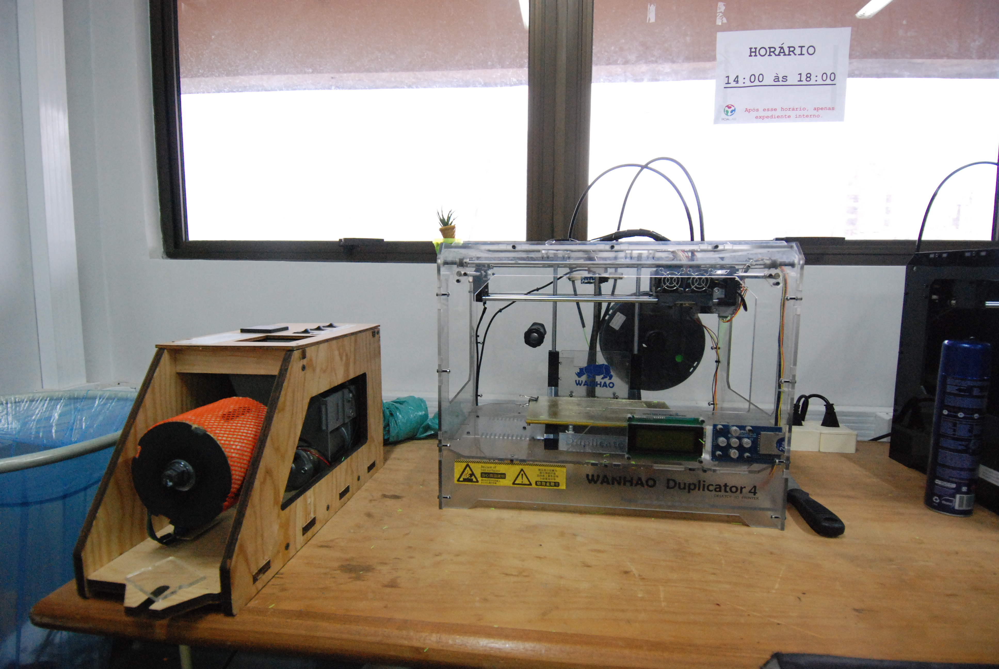
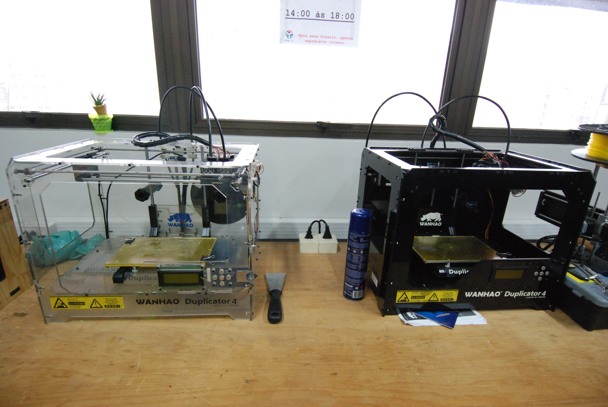

O POALAB é um laboratório de fabricação digital
e está
conectado à rede mundial de fab labs.
Opera como um programa de extensão
do
IFRS campus Porto Alegre.
Temos como missão popularizar o
acesso
e letramento na fabricação digital,
funcionando como uma
plataforma de criatividade,
aprendizagem e invenção.
Ser um Fab
Lab significa estar conectado
a uma comunidade mundial de alunos,
educadores,
técnicos, pesquisadores e inovadores e desenvolver
atividades dentro da filosofia do conhecimento aberto.
Conheça a
FAB
CHARTERA Carta de Intenções que regra os Fab Labs
Os open days são um dos requisitos para a existência
de um fab lab.
Nestes dias, a comunidade externa têm a possibilidade de
conhecer
as ferramentas existentes no lab e aprender sobre fabricação
digital.
Cada fab lab possui suas regras de open day
Essas são
as regras do PoaLab:
Não existe custo para acessar o lab ou utilizar as
máquinas;
Não existe reserva de equipamento;
Os usuários são
convidados a cadastrar os seus
projetos no sistema de projetos do PoaLab
para
compartilhamento com a comunidade;
Os usuários devem trazer os
insumos necessários
para os projetos;
Temos material, equipamento,
pessoal e disposição
para atender a todos, independente de
conhecimento;
Em 2 anos de funcionamento a faixa etária de usuários
variou entre 5 e 76 anos... queremos avançar nos dois limites;
O objetivo
do lab é o de disseminar conhecimento
-- se você não tem nenhum conhecimento
sobre fabricação digital,
o lab foi feito pra você.
Continua com
dúvidas? Mande mensagem via email ou via página do facebook !


.svg "Braille")
 


